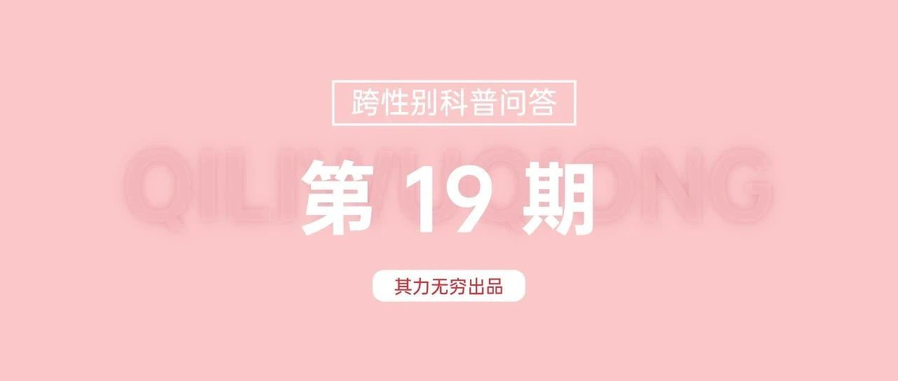

被指派为女性的跨性别者是在厌女吗？｜其力无穷跨性别科普第19期
被指派为女性的跨性别者是在厌女吗？
厌女是近几年网络上关于性别议题的热门话题。
日本学者上野千鹤子认为，在性别二元制的秩序中，无论男女都无法逃离深植于核心位置的厌女症的笼罩。
厌女症在男性身上表现为对女性的蔑视，在女性身上则表现为自我厌恶。
在《厌女》中，上野千鹤子提出了一种例外的厌女方式。
这是说，厌女症有时在女性身上并不表现为自我厌恶，一类女性可能通过外表或行为等方面将自己“男性化”，即我们常说的成为“精神男人”，自动退出女性范畴，从而把厌女症转嫁出去。[1]
但这一概念的流行致使一些人对被指派为女性的跨性别者产生误解，误以为这一人群也是由于厌女心理才想要将自己“去女性化”。
这一人群（包括但不限于跨性别男性）不等同于“精神男人”。
通常而言，我们认为跨性别者并非是对某种性别的社会属性产生厌恶，而是对自己性别内在的认同与其被指派性别不一致。[2]
显然，这与厌女无关。
如果说一名被指派为女性的人，必须认同自己的被指派性别，否则就是厌女，这无疑更加是一种压迫。
文｜啵啵圆（本文编辑补充了部分内容）
参考文献
[1] (日)上野千鹤子. 厌女:日本的女性嫌恶[M]. 王兰译. 上海: 上海三联书店, 2015.
[2] 船思. 跨性别议题常见概念汇总表. 2023.
END